La ALIANZA FRANCESA de MARACAIBO se complacen en invitar a todo el público marabino a celebrar la “Fiesta de la Música 2013” que tendrá lugar gratuitamente el día Viernes 21 de junio a partir de las 5:00 pm en varias locaciones de la ciudad, entre ellas, LA ALIANZA FRANCESA DE MARACAIBO (NUEVA SEDE), TEATRO BARALT, CENTRO CULTURAL LIA BERMUDEZ, BIBLIOTECA DEL ESTADO, VEREDA DEL LAGO Y SAN FRANCISCO.
La “Fête de la musique” es la fiesta de todas las músicas y pertenece a toda la gente que en ella participa. Es una manifestación popular y gratuita por excelencia que se celebra en todos los lugares adaptados, principalmente al aire libre. Es interpretada por músicos de todos los niveles y estilos, y se abre tanto a los artistas profesionales como a los músicos aficionados, aprendices y espectadores que quieren involucrarse con el entorno musical.
Conciertos gratuitos, valor del gesto musical, espontaneidad, creatividad, disponibilidad, curiosidad, libre expresión, pasión… son algunos de los aspectos que caracterizan esta fiesta que busca popularizar y celebrar la música a través de una cita anual en la que jóvenes y adultos logran familiarizarse con las diferentes expresiones musicales existentes.
Todos los años se celebra la Fiesta Internacional de la Música con el fin de festejar el solsticio de verano. Esta fue creada el 21 de junio de 1982, empezó a “exportarse” en 1985 con motivo del Año Europeo de la Música, y en menos de quince años, ha sido llevada a cabo en los 5 continentes.
La “Fiesta de la Música” se basa en los siguientes principios: Celebrar la música viva que pone de manifiesto la importancia y la diversidad de las prácticas musicales en todos sus géneros, con un carácter espontáneo y gratuito por parte de los músicos tanto aficionados como profesionales.
La gran cita anual de nuestra ciudad…
-
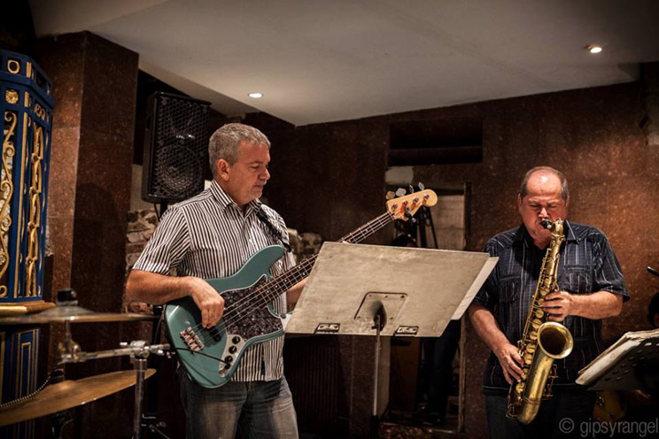 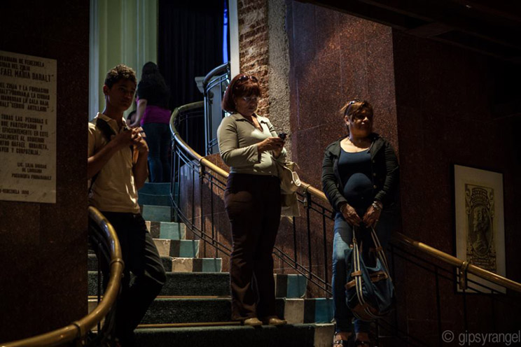 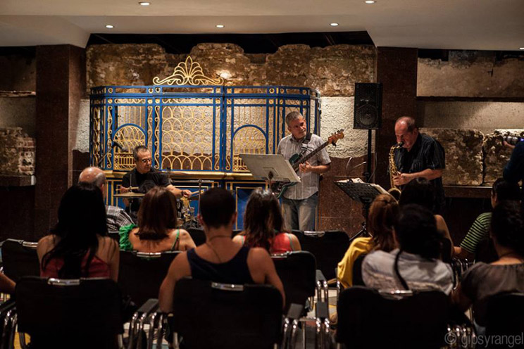 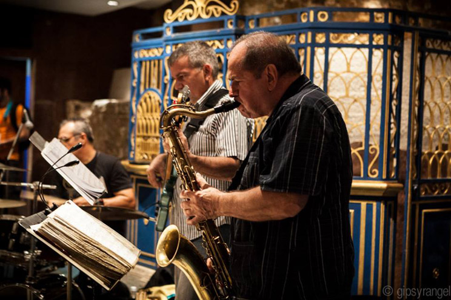 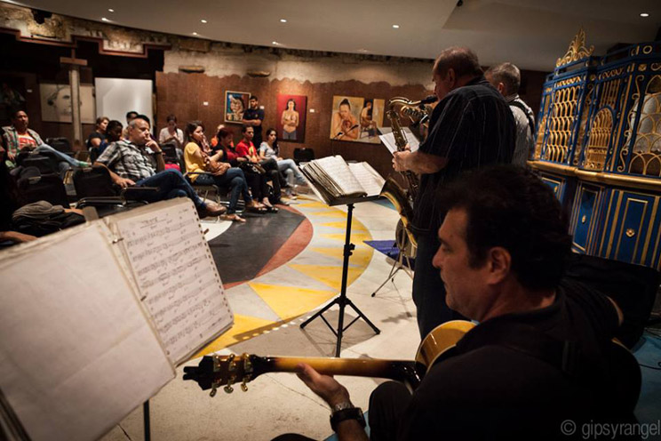 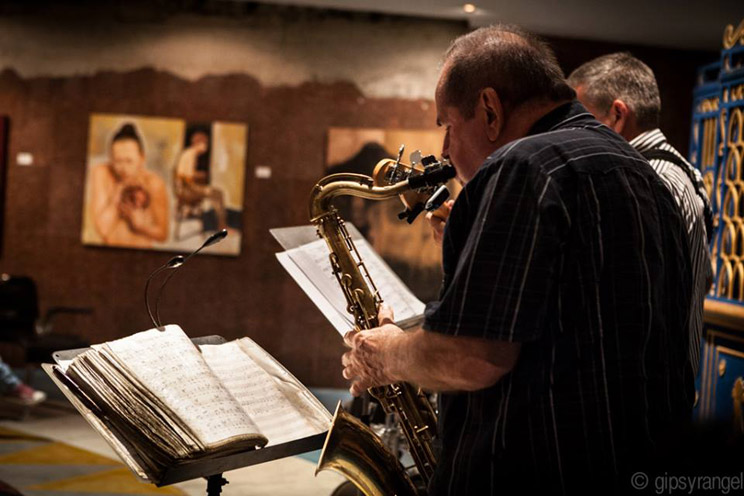 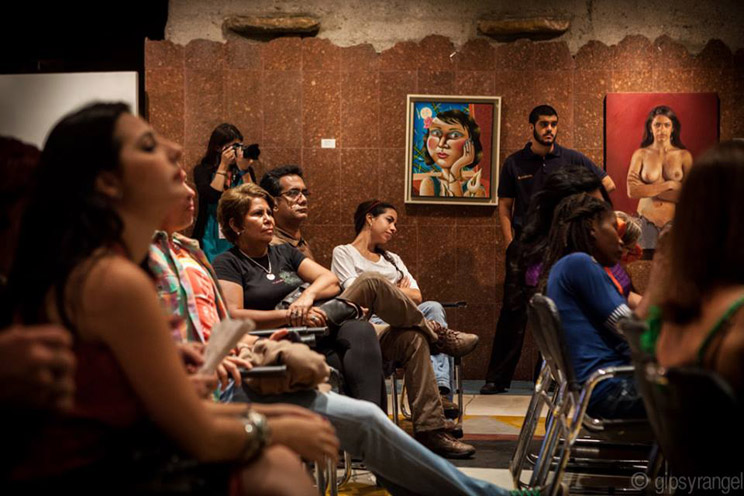 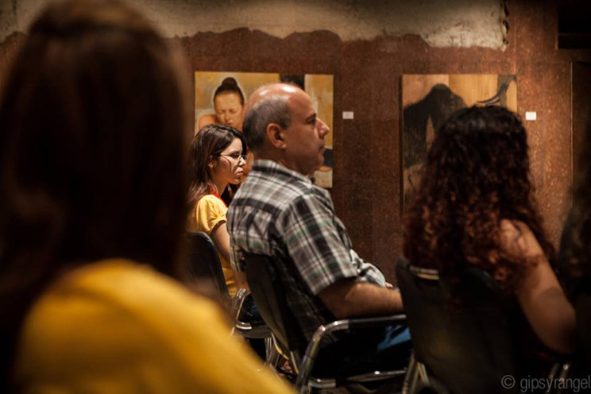 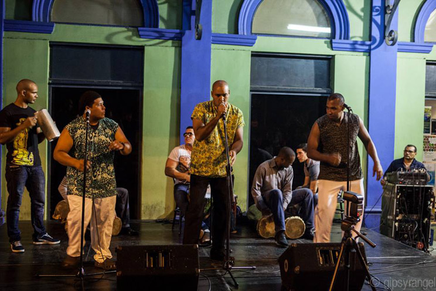 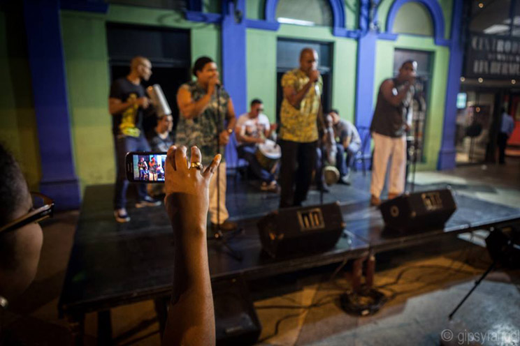 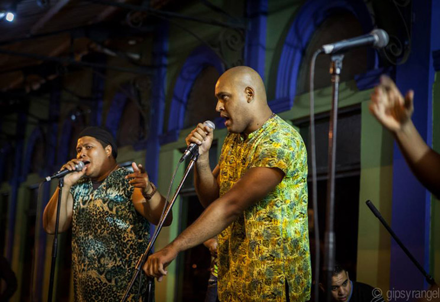 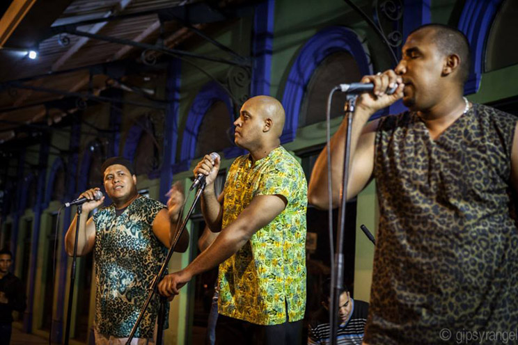 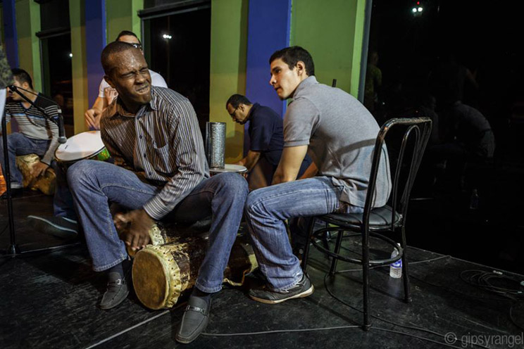 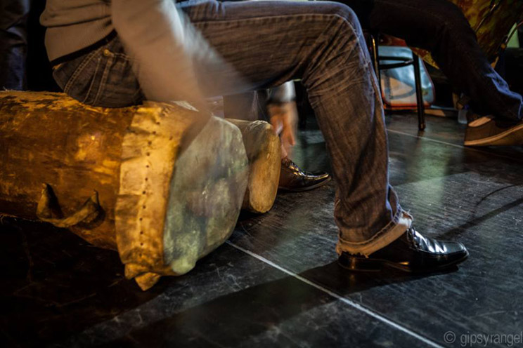
 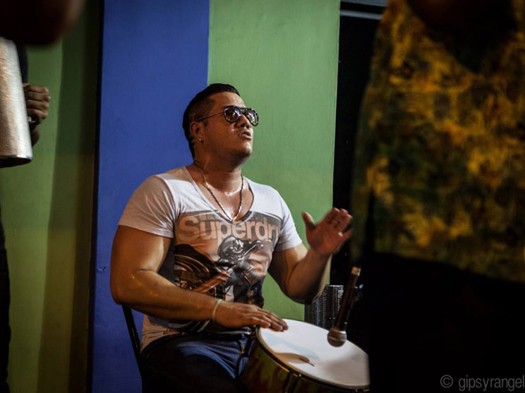
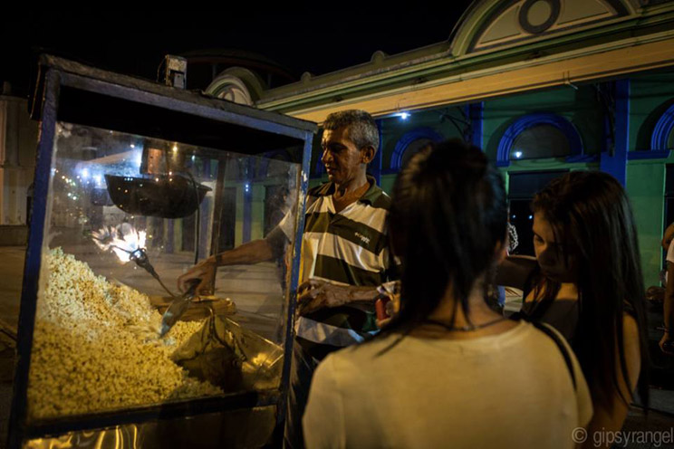
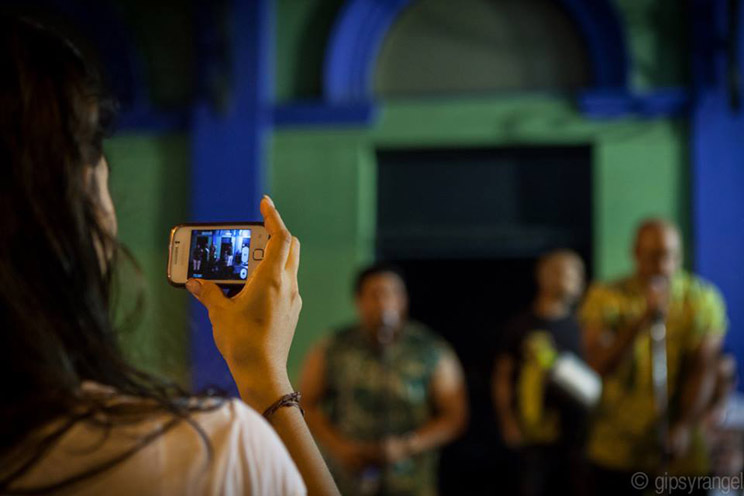
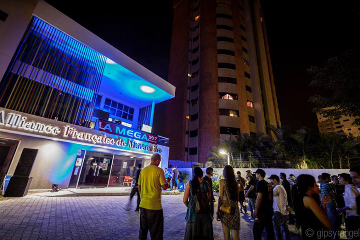
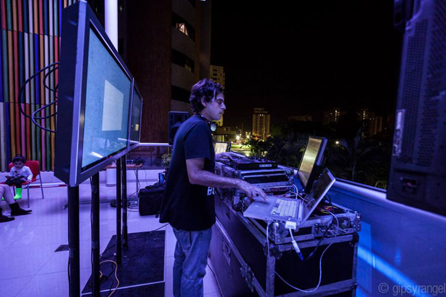
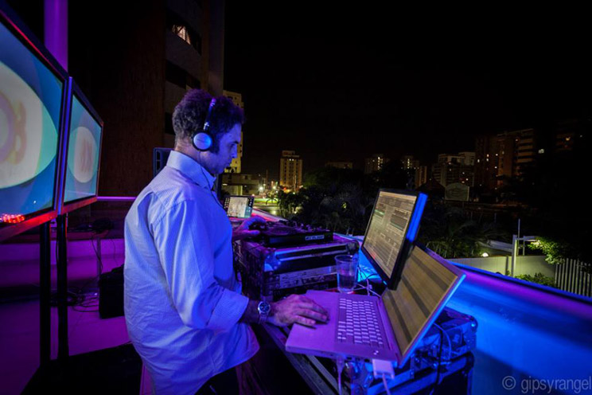
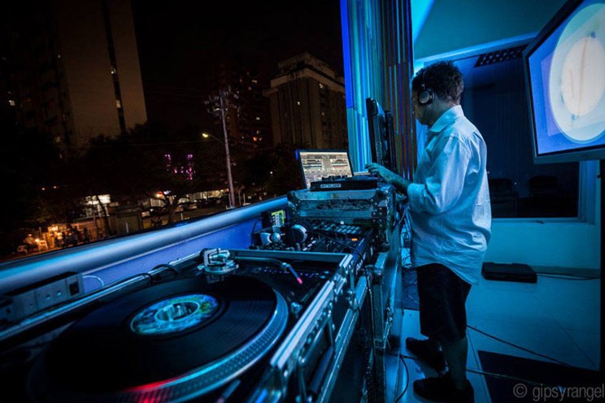
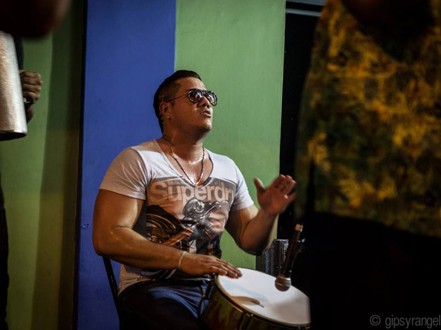
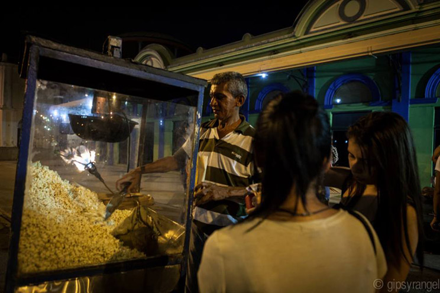
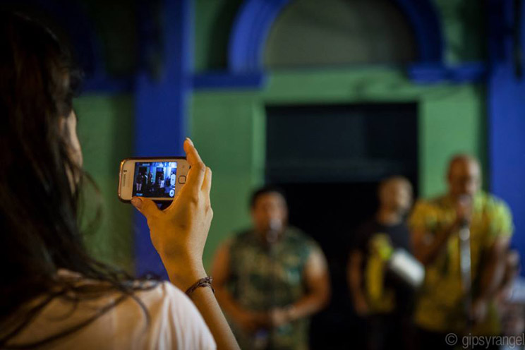
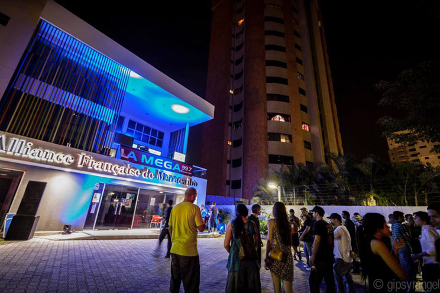
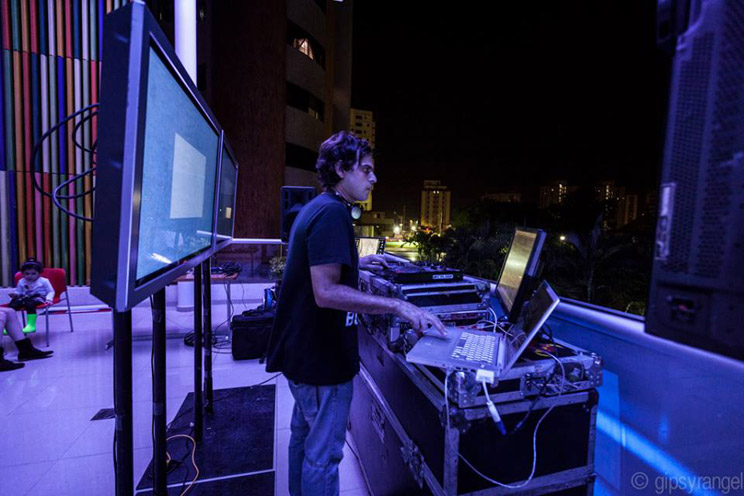
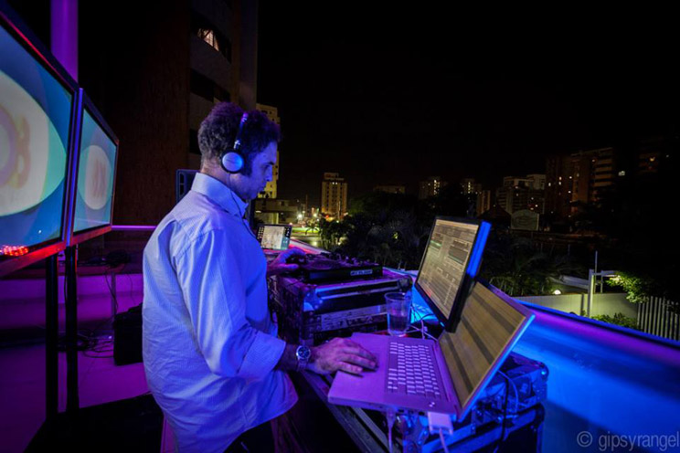
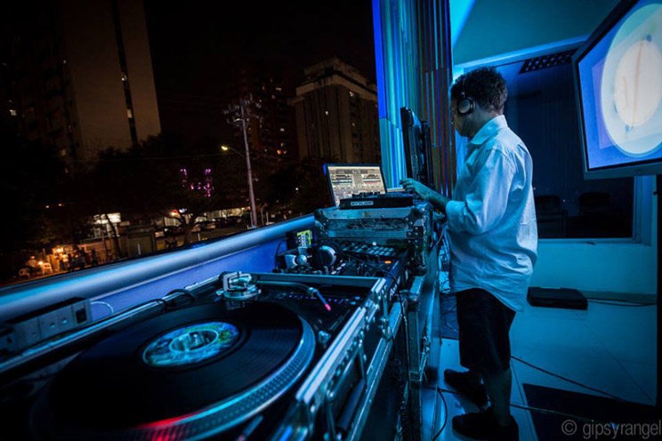
Fotografia: Gipsy Rangel